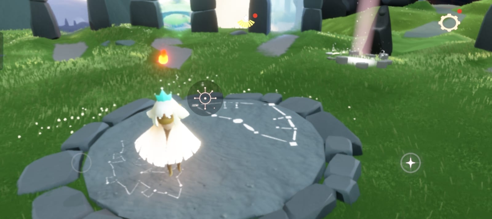
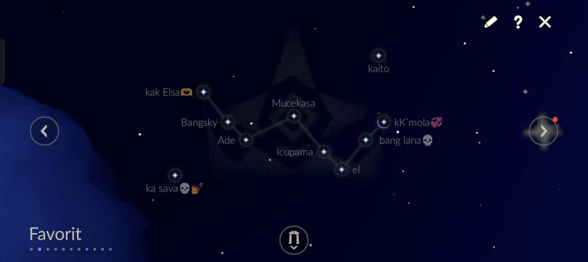

SOCIAL GAME SKY CHILDREN OF THE LIGHT
petualangan sosial Sky: Children of the Light menawarkan keseruan baru kepada pemainnya melalui permainan yang mengedepankan interaksi sosial untuk menciptakan momen unik dan berkesan antarpemain di dalamnya.
Melalui video perkenalkan Mencari Nur, yang diperbincangkan di media sosial dalam beberapa waktu belakangan, Sky: Children of the Light menceritakan kisah Nur dari sudut pandang yang beragam, mulai dari sang ayah, teman, hingga orang lain. Gim yang diadopsi dari kisah nyata itu diharapkan dapat menciptakan momen indah yang layak dikenang, sebab para pemain akan bertemu orang baru serta menciptakan momen tak terlupakan bersama-sama. Eksplorasi dan menjadi cahaya untuk
Sky: Children of the Light menawarkan hal yang berbeda. Fitur sosial multiplayer dalam Sky mengajak pemain untuk saling membantu dan saling menerangi saat mereka menjelajah bersama. Sky memiliki peta berbeda-beda seperti padang rumput, hutan tropis, tebing, dan langit berbintang. Pemain dapat menjelajah dan terbang bebas bersama teman-teman dari dunia yang indah kemudian memasuki dunia permainan yang interaktif. Pemain juga berinteraksi dengan pemain lainnya, semisal bergandengan tangan, berpelukan, menari, berayun, dan bermain petak umpet. Aksi dan properti pada gim itu memang telah disiapkan layaknya berinteraksi di dunia nyata. Game mobile petualangan yang menyabet Apple's iPhone Game of the Year itu juga telah menyiapkan paket tur perjalanan melihat Aurora untuk dua orang ke Islandia selama lima hari. Caranya adalah, pemain hanya perlu membagikan momen berpegangan tangan bersama teman saat bermain Sky: Children of the Light dalam format foto atau video. Pemenang dinilai berdasarkan alur cerita, kreativitas, dan kualitas gambar atau video. Sebanyak 100 peserta lainnya beruntung juga berhak mendapatkan hadiah dengan total senilai Rp120 jam.
CARA MAIN GAME SKY
Langkah pertama untuk bermain Sky bersama teman-teman Anda adalah dengan menambahkan mereka sebagai teman di Switch Anda. Jika mereka bermain di Switch, pastikan Anda telah menambahkan mereka sebagai teman di akun Nintendo Anda. Jika mereka bermain di ponsel, lanjutkan ke langkah berikutnya.
Setelah menambahkan seseorang sebagai teman di akun Nintendo Anda, Anda dapat menambahkannya sebagai teman di Sky. Untuk melakukannya, buka menu jeda dengan menekan tombol Plus pada kontroler JoyCon atau Pro Anda.tombol undang , dan Anda akan dibawa ke menu tempat Anda diminta untuk mengundang teman Nintendo atau teman seluler . Klik mana pun yang sesuai, dan selama teman tersebut telah memainkan Sky, Anda dapat menambahkannya sebagai teman dengan mengirimkan permintaan pertemanan. Untuk teman seluler, Anda harus mencari nama panggilannya. Sky: Cara Bermain Bersama Teman Sekarang untuk bagian yang paling rumit dan berbelit dari keseluruhan proses ini: benar-benar memainkan Sky bersama-sama. Bagian ini akan dipecah menjadi beberapa langkah lebih kecil karena tidak seintuitif yang seharusnya.
Mulai ulang Langit Jika Anda dan teman Anda baru saja menambahkan satu sama lain, Anda mungkin harus memulai ulang Sky. Jika tidak, Anda mungkin tidak akan saling bertemu. Mungkin ini adalah bug yang akan segera diperbaiki, atau mungkin hanya terjadi sekali, tetapi yang terbaik adalah segera memulai ulang permainan dan menyelesaikannya.
Pergi Ke Pulau Asal Dan Berdiri Di Lingkaran Batu
lingkaran batu langit di pulau asal dan konstelasi, gambar terbagi dengan yang pertama di sebelah kanan dan yang terakhir di sebelah kiri Di pulau asal Anda, berdirilah di atas batu bundar yang tertanam di lantai , yang berada tepat di seberang gerbang portal. Tekan tombol Y di atasnya untuk menampilkan menu konstelasi . Dari sini, Anda harus mencari melalui konstelasi menggunakan tombol L dan R hingga Anda melihat nama teman Anda muncul.
cara Bergabunglah dengan Temanmu

bergabung dengan teman di langit - pemain memanggil pemain lain dari konstelasi Setelah Anda melihat nama teman Anda , klik nama tersebut , dan mereka akan muncul di hadapan Anda . Namun, jangan terlalu senang dulu, karena ini bukanlah teman Anda, hanya penampakan. Klik simbol tersebut dan gerakkan kursor ke atas hingga Anda berada di simbol yang tampak seperti orang yang memegang tongkat mengikuti garis putus-putus yang mengarah ke segitiga - simbol tersebut tampak seperti seseorang yang menerbangkan layang-layang jika Anda menyipitkan mata melihatnya. Ini adalah tombol 'bergabung dengan teman' . Gunakan tombol tersebut, dan Anda akan berpindah ke posisi teman Anda - selamat. Sekarang Anda dapat memainkan game dan menyelesaikan teka-teki bersama-sama , membebaskan semangat dan mengembangkan sayap Anda.
friendship configuration
konstelasi pertemanan adalah tempat dimana kamu bisa melihat apakah teman kamu sedang online atau tidak online dan memantau teman-teman yang lain dan juga kita bida memberikan heart dan menyalankan lilin teman mu.
map-map yang ada di sky children of the light
.jpeg)
-
- Desa Aviary
- Pulau Fajar
- Padang Rumput Siang Hari
- Hutan Tersembunyi
- Lembah Kemenangan
- Gurun Emas
- Gudang Pengetahuan
- Eye of Eden